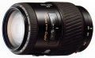

器材库 > 35mm画幅AF变焦镜头 > AF 100-300/4.5-5.6 APO New

详细规格
镜头类型
远摄变焦镜头
发布日期
未知
焦距
100mm-300mm
最大光圈
f/4.5-f/5.6
最小光圈
f/32-f/38
视角（对角）
24.00-8.20
镜头结构
11片/10组
光圈叶片
9片
最大放大倍率
0.25
驱动马达
AF马达
滤镜口径
55mm
镜头卡口
Minolta/Konica-Minolta/Sony AF
防抖
否
颜色
黑色
尺寸
73.00x101.00mm
重量
435g
shamino2013-07-20 15:254.67 分
操作性 4.50耐用性 5.00性价比 5.00解像力 4.50色彩还原 4.50机械结构 4.50
四月下午2011-07-10 11:334.33 分
操作性 4.50耐用性 4.00性价比 4.50解像力 4.50色彩还原 4.50机械结构 4.00
xzg3012010-05-29 11:224.25 分
操作性 4.00耐用性 3.50性价比 5.00解像力 4.50色彩还原 4.50机械结构 4.00
孤独的侠客2008-12-25 14:154.83 分
操作性 4.50耐用性 4.50性价比 5.00解像力 5.00色彩还原 5.00机械结构 5.00
HWJ2007-11-03 17:474.33 分
操作性 4.50耐用性 4.00性价比 4.00解像力 4.50色彩还原 5.00机械结构 4.00
PureMartini2007-07-03 12:024 分
操作性 4.00耐用性 4.00性价比 4.00解像力 4.00色彩还原 4.50机械结构 3.50
manumotive2006-06-19 10:014 分
操作性 4.00耐用性 4.00性价比 3.00解像力 4.50色彩还原 4.50机械结构 4.00
产品图 / 样片
外观图
评测 / 相关文章
该产品暂无存档的评测文章